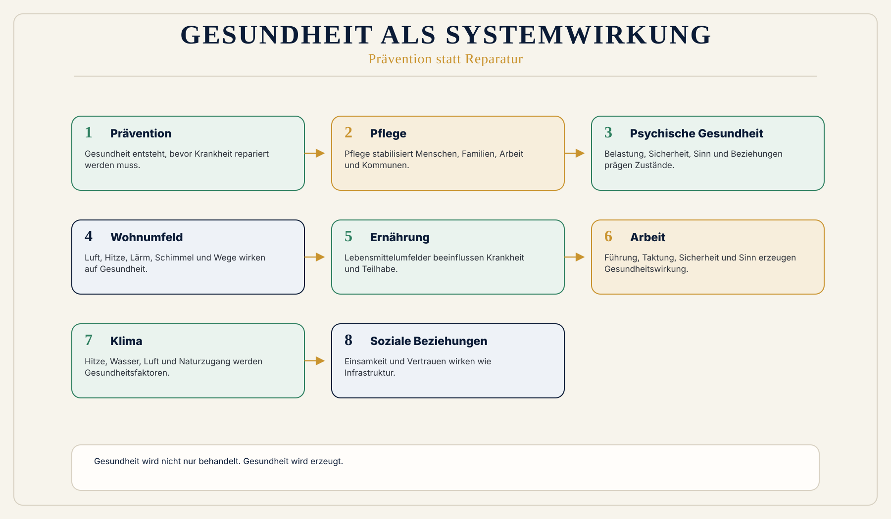

Krankheit statt Prävention
Das alte System bezahlt Krankheit besser als verhinderte Krankheit.
 Wirkungsökonomie
Wirkungsökonomie
Für wen · Gesundheit, Pflege und Prävention
Ein Gesundheitssystem wirkt nicht erst, wenn Krankheit behandelt wird.
Es wirkt, wenn Menschen gesund bleiben können.
Die heutige Ordnung finanziert große Teile von Krankheit: Diagnose, Behandlung, Medikamente, Operationen, Pflegefälle und Reparatur. Das ist notwendig, wenn Menschen krank sind.
Aber ein System, das erst dann stark wird, wenn Gesundheit verloren ist, hat einen schlechten Wirkungsgrad. Die Wirkungsökonomie fragt: Welche Strukturen erzeugen Krankheit - und welche erzeugen Gesundheit?
Warum diese Perspektive wichtig ist
Gesundheit entsteht nicht nur in Arztpraxen und Krankenhäusern. Sie entsteht in Wohnungen, Schulen, Betrieben, Kantinen, Parks, Stadtplanung, Luftqualität, Wasser, Ernährung, Pflegebeziehungen, Arbeitsbedingungen, Einkommen, Bildung, Vertrauen, digitalen Räumen und sozialer Zugehörigkeit.
Wenn diese Bedingungen schlecht sind, landet die Rechnung später im Gesundheitssystem.
Was heute falsch läuft
Das alte System bezahlt Krankheit besser als verhinderte Krankheit.
Pflege wird zu oft als Kostenblock gelesen, nicht als stabilisierende Wirkleistung.
Arbeitswelt, Wohnen, Stadtplanung, digitale Räume, Einsamkeit und Klima werden unterschätzt.
Warum Reparatur nicht reicht
ESG, Reporting, Nachhaltigkeitsberatung oder Reparaturpolitik können Anschlussräume sein. Sie lösen den Kernfehler aber nicht, wenn sie Wirkung nur beschreiben, nachträglich dokumentieren oder Schäden erst reparieren.
Die Wirkungsökonomie setzt früher an: beim Maßstab, bei der Fehlsteuerung und bei der Rückkopplung in Preise, Kapital, Haushalte, Management, Medien und Entscheidungen.
WÖk-Verschiebung
Die WÖk macht Gesundheit zur Systemwirkung. Prävention wird als Wirkleistung anerkannt. Gesundheitshaushalte, kommunale Präventionsräume, Sozialraumprofile, One-Health-Logik, psychische Gesundheit, Pflegewirkung, gesunde Arbeit und digitale Frühwarnsysteme werden Teil der Steuerung.
Gesundheit wird nicht moralisiert. Niemand ist schuld, krank zu sein. Die WÖk fragt nach Bedingungen, nicht nach Perfektionsmenschen.
Konkreter Gewinn
Was nicht passiert
Keine Schuldzuweisung an Kranke und keine Fitnesspflicht.
Gesundheit wird nicht zur Personenbewertung.
Die WÖk stärkt Versorgung, indem sie verhindert, dass Medizin zum Auffangbecken aller Fehlsteuerungen wird.
Wirkungspfad
Konkretes Beispiel
Eine Stadt ohne Schatten, mit schlechter Luft, wenig Bewegung, unsicheren Wegen und isolierenden Wohnformen erzeugt später Gesundheitskosten. Eine Stadt mit Grün, Begegnung, sicheren Wegen, guter Luft, sozialer Mischung und Präventionsräumen erzeugt Gesundheit. Das ist nicht Wellness. Das ist Wirkungsökonomie.
Visual
Mensch in der Mitte. Knoten: Wohnen, Arbeit, Klima, Ernährung, Pflege, Psyche, Bildung, Stadt, digitale Räume. Unten: Prävention -> weniger Reparatur.

Vertiefung
Die nächste Frage lautet nicht, wie diese Zielgruppe nachhaltiger wird. Sie lautet: Welche alte Steuerungslogik erzeugt das Problem, und wie verändert Wirkung die Logik selbst?
Quellenbasis / Status